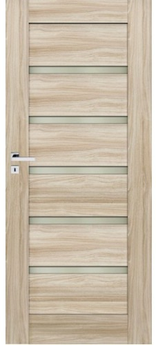
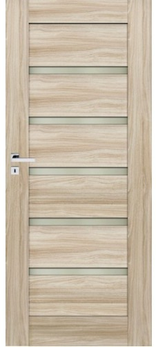

Vidaus durų katalogas
2020.10.27 06:37

Meniu Dirbame visoje Lietuvoje +370 612 10942 8 612 10942 Apie mus Galerija Užklausos forma Kontaktai Vidaus durys Durų modeliai Durų stiklai Lauko baldai Stalai, kėdės Kiti gaminiai Baldai Jūsų name Privalumai ir trūkumai Kaip teisingai pasirinkti? Medinių baldų priežiūra
Medinės vidaus durys
Vidaus durų modeliai
Vidaus duris galime pagaminti įvairių stilių, modelių. Duris išmatuojame, arba pagaminame pagal Jūsų pateiktus matmenis. Pagaminę duris atvykstame ir sumontuojame.
Medinės vidaus durys – svarbus interjero akcentas, įsiliejantis į bendrą patalpos erdvę. Pakeitus duris galima greitai ir ženkliai pakeisti kambario vaizdą. Svarbu, kad durys įsilietų ir papildytų interjerą, būtų tiksliai parinktu Jūsų namų dekoro elementu.Savo klientams siūlome pagal jų individualius projektus pagamintas medines įvairių formų vidaus duris.
Kviečiame peržiūrėti mūsų gaminių galeriją ir išsirinkti Jums patinkantį modelį. Galbūt turite savo durų viziją? Būtinai susisiekite su mumis Jums patogiu būdu ir mes įgyvendinsime Jūsų idėją!
- Modernios durys - Stepmaster
- Vidaus Durys - Vilniuje, Kaune, Klaipėdoje | Kambariodurys.lt
- Durys > Plastikinės durys | Vokiška Kokybė | KOMMERLING, KBE
- Pigios vidaus durys Vilniuje
- Pagrindinis - Faneruotos vidaus durys kaune - Pigios geros ...
- Durys | Hörmann durų programa stabilioms statyboms
- Reisvita - Durys namui
- Aukščiausios kokybės Medinės durys, Ąžuolinės durys ...
- Laminuotos durys - Katalogas - DurysDurytes
- VIDAUS durys | DURŲ PASAULIS
- Modernios durys - Stepmaster
Aukščiausios kokybės Medinės durys, Ąžuolinės durys, Pušinės durys, Laminuotos durys, Faneruotos durys, Lauko durys Pagamintos Lietuvoje Už patrauklią kainą
- Vidaus Durys - Vilniuje, Kaune, Klaipėdoje | Kambariodurys.lt
E-durys – tai elektroninė durų parduotuvė, prekiaujanti vidaus, lauko, specializuotos paskirties durimis bei durų priedais. Čia rasite duris pasižyminčias ne tik savitu stiliumi ar unikaliu dizainu, bet ir išskirtiniu funkcionalumu: nematomas vidaus duris, stumdomas duris, abipuses varstomas duris, priešgaisrines ar garsą ...
- Durys > Plastikinės durys | Vokiška Kokybė | KOMMERLING, KBE
Ilgaamžiškumas Durys gaminamos tik iš aukščiausios kokybės brandaus ąžuolo medienos, yra ilgaamžės, tvirtos, puikiai izoliuoja garsą. Aukščiausia kokybė Kontroliuojame ir esame atsakingi už visą tiekimo grandinę: nuo medienos atrankos, pristatymo į gamyklą, tikslaus technologinio medžio paruošimo ciklo, produkto gamybos iki ...
- Pigios vidaus durys Vilniuje
Kambario durys turi būti ne tik tvirtos, bet ir gražios, puošnios. Tam jos yra dengiamos ekofaneruote. Toks durų padengimo būdas yra pakankamai stiprus ir tampa itin tikroviška medžio imitacija.
- Pagrindinis - Faneruotos vidaus durys kaune - Pigios geros ...
Medinės durys pardavinėjamos tiek natūralios, tiek jau dažytos (beicuotos) įvairiomis spalvomis. Faneruotos durys – karkasas gaminamas iš klijuotos medienos, abi pusės dengiamos medžio drožlių plokščių sluoksniais, o paviršius padengtas natūralia ar „fine line“ faneruote. Laminuotos durys puikiai dera prie šiuolaikinio ...
- Durys | Hörmann durų programa stabilioms statyboms
Apsauginės durys rūsiui arba įėjimui į garažą, ugnį sulaikančios durys katilinėms arba daugiafunkcinės durys dirbtuvėms – mūsų aukštos kokybės plieno durys pasirūpins, kad tarp savo namų sienų jaustumėtes patogiai ir saugiai. apie funkcines duris jūsų namams.
- Reisvita - Durys namui
Šarvuotos durys, vidaus durys, lauko durys, metalinės laiptinių durys, plastikinės lauko durys. Gamyba ir prekyba. Šiauliai
- Aukščiausios kokybės Medinės durys, Ąžuolinės durys ...
Šiltos ir puošnios lauko durys Jūsų namams. Kokybiškos vidaus durys. Kambario durys puikiai tiks Jūsų interjerui.
- Laminuotos durys - Katalogas - DurysDurytes
Kokybiškos ir pigios vidaus durys Vilniuje. Didelis vidaus ir lauko durų pasirinkimas. Pas mus rasite itin platų vidaus medžio masyvo durų, faneruotų durų, laminuotų durų ir lauko medžio masyvo durų, šarvuotų durų asortimentą.
- VIDAUS durys | DURŲ PASAULIS
Medinės lauko durys - specialiai apšiltintos ir impregnuotos, Lietuviškai žiemai ir vasarai pritaikytos medienos masyvo durys. Apsauga. Labai svarbu, kad projektuojant namą medinės lauko durys būtų apsaugomos nuo tiesioginių saulės spindulių ir nuo tiesioginio lietaus.
Aukščiausios kokybės Medinės durys, Ąžuolinės durys, Pušinės durys, Laminuotos durys, Faneruotos durys, Lauko durys Pagamintos Lietuvoje Už patrauklią kainą
E-durys – tai elektroninė durų parduotuvė, prekiaujanti vidaus, lauko, specializuotos paskirties durimis bei durų priedais. Čia rasite duris pasižyminčias ne tik savitu stiliumi ar unikaliu dizainu, bet ir išskirtiniu funkcionalumu: nematomas vidaus duris, stumdomas duris, abipuses varstomas duris, priešgaisrines ar garsą ...
Ilgaamžiškumas Durys gaminamos tik iš aukščiausios kokybės brandaus ąžuolo medienos, yra ilgaamžės, tvirtos, puikiai izoliuoja garsą. Aukščiausia kokybė Kontroliuojame ir esame atsakingi už visą tiekimo grandinę: nuo medienos atrankos, pristatymo į gamyklą, tikslaus technologinio medžio paruošimo ciklo, produkto gamybos iki ...
Kambario durys turi būti ne tik tvirtos, bet ir gražios, puošnios. Tam jos yra dengiamos ekofaneruote. Toks durų padengimo būdas yra pakankamai stiprus ir tampa itin tikroviška medžio imitacija.
Medinės durys pardavinėjamos tiek natūralios, tiek jau dažytos (beicuotos) įvairiomis spalvomis. Faneruotos durys – karkasas gaminamas iš klijuotos medienos, abi pusės dengiamos medžio drožlių plokščių sluoksniais, o paviršius padengtas natūralia ar „fine line“ faneruote. Laminuotos durys puikiai dera prie šiuolaikinio ...
Apsauginės durys rūsiui arba įėjimui į garažą, ugnį sulaikančios durys katilinėms arba daugiafunkcinės durys dirbtuvėms – mūsų aukštos kokybės plieno durys pasirūpins, kad tarp savo namų sienų jaustumėtes patogiai ir saugiai. apie funkcines duris jūsų namams.
Šarvuotos durys, vidaus durys, lauko durys, metalinės laiptinių durys, plastikinės lauko durys. Gamyba ir prekyba. Šiauliai
Šiltos ir puošnios lauko durys Jūsų namams. Kokybiškos vidaus durys. Kambario durys puikiai tiks Jūsų interjerui.
Kokybiškos ir pigios vidaus durys Vilniuje. Didelis vidaus ir lauko durų pasirinkimas. Pas mus rasite itin platų vidaus medžio masyvo durų, faneruotų durų, laminuotų durų ir lauko medžio masyvo durų, šarvuotų durų asortimentą.
Medinės lauko durys - specialiai apšiltintos ir impregnuotos, Lietuviškai žiemai ir vasarai pritaikytos medienos masyvo durys. Apsauga. Labai svarbu, kad projektuojant namą medinės lauko durys būtų apsaugomos nuo tiesioginių saulės spindulių ir nuo tiesioginio lietaus.

 
